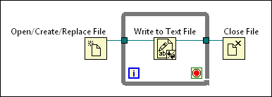

Use disk streaming to save memory resources by reducing the number of times a function interacts with the operating system to open and close a file. Disk streaming refers to keeping files open while you perform multiple read or write operations within a loop.
Avoid wiring a path control or a constant to a function or VI that reads from or writes to a file, such as the Write to Text File function or the Read from Binary File function, as doing so adds the overhead of opening and closing the file each time the function or VI executes. Instead, implement disk streaming operations to eliminate this overhead.
Consider the following information when determining whether a disk streaming operation is appropriate for your application:
To create a typical disk streaming operation, place the Open/Create/Replace File function and the Close File function outside the loop as in the following block diagram.

In a disk streaming design pattern, a VI continuously writes to a file within the loop without the overhead associated with opening and closing the file in each iteration.
|
Tip��For best results, avoid running other VIs and functions, such as analysis VIs and functions, until you complete the acquisition. |